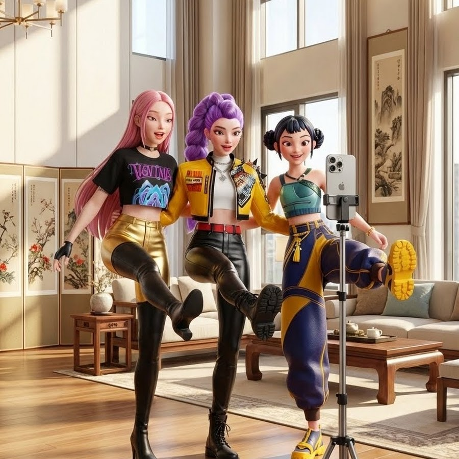
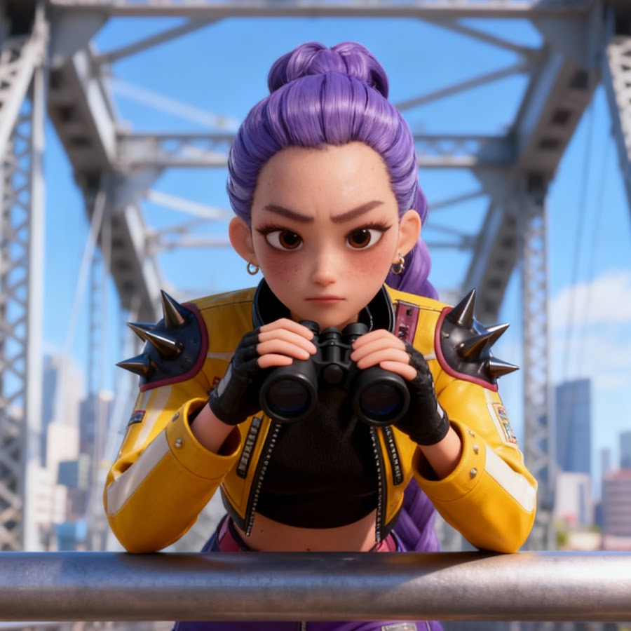

对标账号
CuRe 구래
粉丝 3320.0万视频 1,000反差剧情 / 轻喜剧 Shorts
文档在 2026-03-24 这些日期直接引用了这个账号的样本视频，主要用于验证「爆款的轮回，死灰复燃」这类结构。
只收录 2026 年 1 月起这些日期日志里真实命中过的 YouTube 账号。详情页里有账号画像、最新 10 条、最热 10 条和推荐说明。
文档在 2026-03-24 这些日期直接引用了这个账号的样本视频，主要用于验证「爆款的轮回，死灰复燃」这类结构。

文档在 2026-01-26 这些日期直接引用了这个账号的样本视频，主要用于验证「剧本：地上的画陷阱」这类结构。

文档在 2026-01-26 这些日期直接引用了这个账号的样本视频，主要用于验证「剧本：地上的画陷阱」这类结构。

文档在 2026-03-23 这些日期直接引用了这个账号的样本视频，主要用于验证「Seedance2.0的 Kpop Shorts 井喷」这类结构。

文档在 2026-03-24 这些日期直接引用了这个账号的样本视频，主要用于验证「爆款的轮回，死灰复燃」这类结构。

文档在 2026-03-23 这些日期直接引用了这个账号的样本视频，主要用于验证「Seedance2.0的 Kpop Shorts 井喷」这类结构。

文档在 2026-03-23 这些日期直接引用了这个账号的样本视频，主要用于验证「Seedance2.0的 Kpop Shorts 井喷」这类结构。